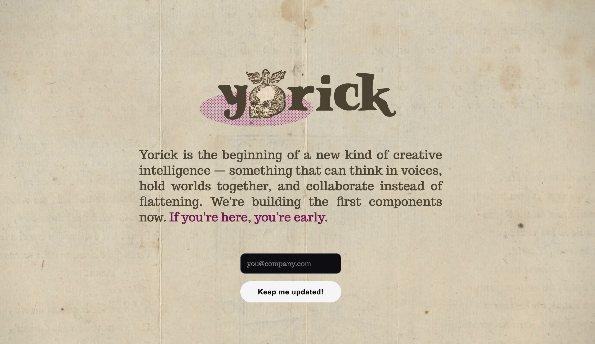

An AI-assisted writing system built to preserve the integrity of a writer's voice. The writer stays in control. AI assists without overwriting.

As generative AI tools entered creative writing, most optimized for speed and output at the expense of voice. Readers began reacting negatively not just to AI-generated prose, but to the suspicion that a piece might be machine-written. Writers lost trust in the tools and in the work they produced.
The challenge was to design an AI system that assists without overwriting authorial intent or encouraging generic text.
Yorick is directly relevant to the broader challenge of designing AI-enabled products. The problems it addresses—trust, transparency, user control, workflow integration, the boundary between human judgment and machine output—are the same problems facing any team building AI into their product. This project forces me to work through those problems at the interaction design level, not just in theory.
Designed UX and system behavior in parallel, defining how context and state persist across a writing project. Built production frontend code to validate interaction models and collaborated closely with engineering on feasibility. Implementation details are intentionally private while core ideas remain in development.
In active development. Private alpha with working writers. Core design decisions are stable. Implementation is ongoing. Details are intentionally limited while the product is in development.
Research artifact: AI Trust & Authorship data visualization →